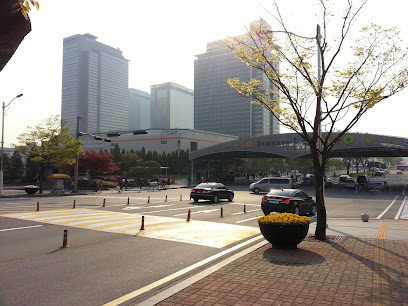

Suwon (수원시), oficialmente Ciudad de Suwon, es la ciudad capital en la provincia de Gyeonggi al norte de la república de Corea del Sur. Está ubicada al sur de Seúl a unos 30 km y su área es de 121.08 km² y su población total es de 1.098.000 habitantes. Se conoce tradicionalmente como "La ciudad de la piedad filial".
En tiempos antiguos, Suwon era conocida como Mosu-guk (모수국). Sin embargo, durante la época de los Tres Reinos de Corea, el área que comprende las ciudades modernas de Suwon y Hwaseong eran conocidas en conjunto como Maehol-gun (매홀군).
En 757, bajo el reino de Gyeongdeok de la Silla Unificada , el nombre fue cambiado a Suseong-gun (수성군). En 940, durante la Dinastía Goryeo, el nombre fue cambiado a Suju (수주). En 1413 el tercer rey de la Dinastía Joseon, Taejong le cambió el nombre a Suwon.
En 1592, durante la invasión japonesa de Corea, el Comandante Yi Gwang (이광), intentó comprobar el progreso de Japón con el lanzamiento de su ejército hacia la ciudad capital, Seúl (en ese momento llamada Hanseong). El ejército se retiró, sin embargo, después de la noticia que la ciudad ya había sido saqueada llegó el comando. A medida que el ejército creció en tamaño a 50.000 hombres con la acumulación de varias fuerzas voluntarias, Yi Gwang y los comandantes irregulares reconsideraron su objetivo de recuperar la capital, y llevó las fuerzas al norte de Suwon.
UBICACIÓN: